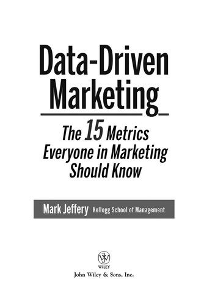

马克·杰弗里（Mark Jeffery）是美国西北大学凯洛格管理学院（Kellogg School of Management）的教授，长期研究技术投资回报率与营销分析。他在凯洛格主持的高管教育课程吸引了来自全球数百家企业的管理者，其研究成果被《华尔街日报》《哈佛商业评论》等广泛引用。《数据驱动营销》（Data-Driven Marketing）出版于2010年，由Wiley出版社发行。杰弗里在书中指出，尽管企业每年在营销上投入数万亿美元，但大多数高管无法量化营销活动的实际回报。他的调查数据显示，超过百分之八十的营销人员对自己使用的指标缺乏信心，而首席财务官则经常将营销预算视为最容易削减的开支。这本书正是为了弥合营销部门与财务部门之间长期存在的信任鸿沟而写。
全书的核心框架是杰弗里提炼出的十五个关键营销指标。他将这些指标分为几个层次：基础指标包括品牌知名度、客户满意度和试用率；财务指标涵盖利润率、净现值和内部收益率；数字营销指标涉及点击率、每次获客成本、转化率以及口碑传播效率。杰弗里强调，真正的数据驱动营销不是简单地收集数据，而是建立一套将营销活动与财务结果直接挂钩的度量体系。他用大量企业案例——从宝洁的品牌管理到亚马逊的推荐引擎，从杜邦的B2B营销到微软的数字广告——展示了如何在实践中运用这些指标做出更明智的资源分配决策。书中特别强调了"营销投资回报率"（ROMI）这一概念，并详细说明了如何避免常见的计算陷阱。
杰弗里在书中提出了一个令人警醒的发现：即使在数据分析工具日趋成熟的今天，多数企业仍然依靠直觉和惯性来决定营销预算的分配。他将企业的营销分析能力划分为五个成熟度等级，从最初级的"凭感觉决策"到最高级的"实时优化与预测分析"。他的研究表明，处于较高分析成熟度的企业，其营销投资回报率显著优于同行。这一框架为管理者提供了一条清晰的能力升级路径，也解释了为什么某些企业能够在相同的预算约束下获得远超竞争对手的营销效果。
对于企业管理者和投资者而言，《数据驱动营销》的价值在于它提供了一种将营销从"艺术"转化为"科学"的方法论。在一个越来越多的商业决策需要量化支撑的时代，营销部门不能继续以"品牌建设难以衡量"为由回避问责。杰弗里的十五个指标并非要取代营销人员的创意直觉，而是为创意提供一个可验证的反馈回路——让管理者知道哪些创意真正推动了业务增长，哪些只是在消耗预算。这种思维方式与价值投资中"用数据检验假设"的精神高度一致：无论是评估一家公司的营销效率，还是审视自己企业的营销支出，这本书都提供了一套实用且可操作的分析工具。